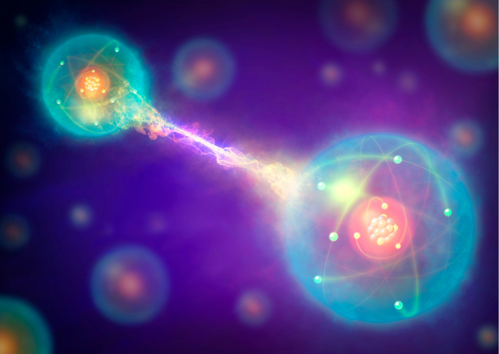
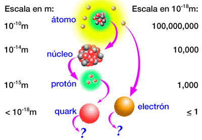
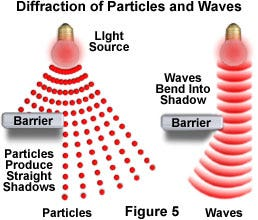

Aprendiendo desde cero

La mecánica cuántica es la rama de la física que estudia el comportamiento de la materia y la energía a escalas microscópicas (atómicas y subatómicas). A diferencia de la física clásica, describe el universo de manera probabilística y revela fenómenos que escapan a nuestra intuición cotidiana
Leer más
Esta escala ilustra el concepto de partículas elementales. Mientras que el núcleo y los protones son compuestos divisibles, los electrones y los quarks no tienen subestructura conocida hasta hoy. La física cuántica rige este microcosmos, donde la materia pierde su apariencia sólida y se comporta mediante interacciones de campos fundamentales.
Leer más
El dualismo onda-partícula dicta que los objetos cuánticos (como la luz o los electrones) tienen una doble naturaleza. Mientras no los observamos, se propagan por el espacio como ondas de probabilidad; pero al medirlos o interactuar con ellos, se comportan como partículas localizadas en un punto exacto.
Leer más